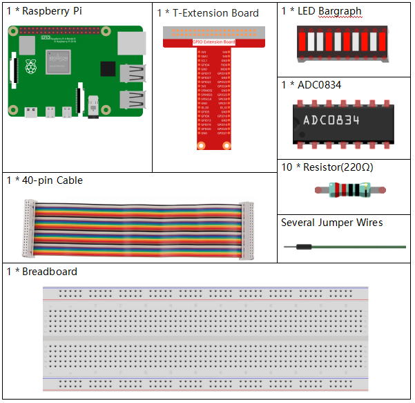
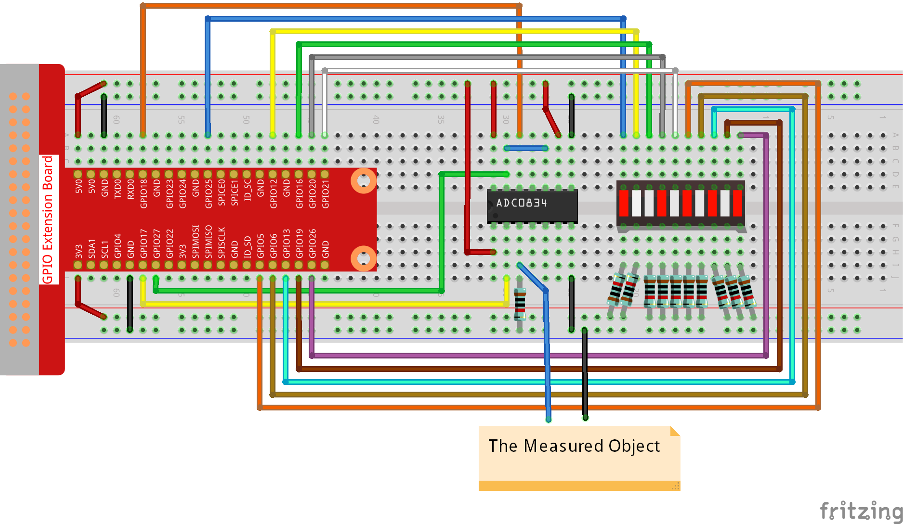

Nota
¡Hola! Bienvenido a la comunidad de entusiastas de SunFounder para Raspberry Pi, Arduino y ESP32 en Facebook. Sumérgete en el mundo de Raspberry Pi, Arduino y ESP32 junto a otros entusiastas.
¿Por qué unirse?
Soporte de Expertos: Resuelve problemas postventa y desafíos técnicos con ayuda de nuestra comunidad y equipo.
Aprende y Comparte: Intercambia consejos y tutoriales para mejorar tus habilidades.
Avances Exclusivos: Acceso anticipado a anuncios de nuevos productos y adelantos.
Descuentos Especiales: Disfruta de descuentos exclusivos en nuestros productos más recientes.
Promociones Festivas y Sorteos: Participa en sorteos y promociones especiales por temporadas.
👉 ¿Listo para explorar y crear con nosotros? Haz clic en [Aquí] y únete hoy mismo.
3.1.5 Indicador de Batería
Introducción
En este curso, crearemos un dispositivo indicador de batería que puede mostrar visualmente el nivel de carga en una barra LED.
Componentes
Diagrama de Esquemático
T-Board Name |
physical |
wiringPi |
BCM |
GPIO17 |
Pin 11 |
0 |
17 |
GPIO18 |
Pin 12 |
1 |
18 |
GPIO27 |
Pin 13 |
2 |
27 |
GPIO25 |
Pin 22 |
6 |
25 |
GPIO12 |
Pin 32 |
26 |
12 |
GPIO16 |
Pin 36 |
27 |
16 |
GPIO20 |
Pin 38 |
28 |
20 |
GPIO21 |
Pin 40 |
29 |
21 |
GPIO5 |
Pin 29 |
21 |
5 |
GPIO6 |
Pin 31 |
22 |
6 |
GPIO13 |
Pin 33 |
23 |
13 |
GPIO19 |
Pin 35 |
24 |
19 |
GPIO26 |
Pin 37 |
25 |
26 |
Procedimientos Experimentales
Paso 1: Monta el circuito.
{kind=link}
Para Usuarios de Lenguaje C
Paso 2: Dirígete a la carpeta del código.
cd ~/davinci-kit-for-raspberry-pi/c/3.1.5/
Paso 3: Compila el código.
gcc 3.1.5_BatteryIndicator.c -lwiringPi
Paso 4: Ejecuta el archivo.
sudo ./a.out
Cuando el programa se ejecute, conecta el pin 3 del ADC0834 y el pin GND de forma separada, luego conéctalos a los dos polos de una batería. Puedes ver que el LED correspondiente en la barra LED se enciende para mostrar el nivel de carga (rango de medición: 0-5V).
Nota
Si el programa no funciona después de ejecutarse, o aparece un error como: "wiringPi.h: No such file or directory», consulta c code is not working?.
Explicación del Código
void LedBarGraph(int value){
for(int i=0;i<10;i++){
digitalWrite(pins[i],HIGH);
}
for(int i=0;i<value;i++){
digitalWrite(pins[i],LOW);
}
}
Esta función controla el encendido o apagado de los 10 LEDs en la barra LED. Primero, se establece un nivel alto en los LEDs para apagarlos, luego, se determina cuántos LEDs encender según el valor analógico recibido.
int main(void)
{
uchar analogVal;
if(wiringPiSetup() == -1){ //when initialize wiring failed,print messageto screen
printf("setup wiringPi failed !");
return 1;
}
pinMode(ADC_CS, OUTPUT);
pinMode(ADC_CLK, OUTPUT);
for(int i=0;i<10;i++){ //make led pins' mode is output
pinMode(pins[i], OUTPUT);
digitalWrite(pins[i],HIGH);
}
while(1){
analogVal = get_ADC_Result(0);
LedBarGraph(analogVal/25);
delay(100);
}
return 0;
}
analogVal genera valores (0-255) según el voltaje (0-5V). Por ejemplo, si se detecta un voltaje de 3V en una batería, el valor correspondiente de 152 se muestra en el voltímetro.
Los 10 LEDs de la barra LED se utilizan para mostrar las lecturas de analogVal. 255/10 = 25, así que cada 25 unidades de valor analógico que aumentan, se enciende un LED adicional. Por ejemplo, si “analogVal = 150” (aproximadamente 3V), se encienden 6 LEDs.
Para Usuarios de Lenguaje Python
Paso 2: Dirígete a la carpeta del código.
cd ~/davinci-kit-for-raspberry-pi/python/
Paso 3: Ejecuta el archivo.
sudo python3 3.1.5_BatteryIndicator.py
Cuando el programa se ejecute, conecta el pin 3 del ADC0834 y el pin GND de forma separada, luego conéctalos a los dos polos de una batería. Podrás ver que el LED correspondiente en la barra LED se enciende para mostrar el nivel de carga (rango de medición: 0-5V).
Código
Nota
Puedes Modificar/Restablecer/Copiar/Ejecutar/Detener el código a
continuación. Pero antes de hacerlo, debes ir a la ruta del código
fuente como davinci-kit-for-raspberry-pi/python.
import RPi.GPIO as GPIO
import ADC0834
import time
ledPins = [25, 12, 16, 20, 21, 5, 6, 13, 19, 26]
def setup():
GPIO.setmode(GPIO.BCM)
ADC0834.setup()
for i in ledPins:
GPIO.setup(i, GPIO.OUT)
GPIO.output(i, GPIO.HIGH)
def LedBarGraph(value):
for i in ledPins:
GPIO.output(i,GPIO.HIGH)
for i in range(value):
GPIO.output(ledPins[i],GPIO.LOW)
def destroy():
GPIO.cleanup()
def loop():
while True:
analogVal = ADC0834.getResult()
LedBarGraph(int(analogVal/25))
if __name__ == '__main__':
setup()
try:
loop()
except KeyboardInterrupt: # Cuando se presiona 'Ctrl+C', se ejecutará destroy().
destroy()
Explicación del Código
def LedBarGraph(value):
for i in ledPins:
GPIO.output(i,GPIO.HIGH)
for i in range(value):
GPIO.output(ledPins[i],GPIO.LOW)
Esta función controla el encendido o apagado de los 10 LEDs en la barra de LED. Primero, se establece un nivel alto en los LEDs para apagarlos, y luego se decide cuántos LEDs se encenderán cambiando el valor analógico recibido.
def loop():
while True:
analogVal = ADC0834.getResult()
LedBarGraph(int(analogVal/25))
analogVal genera valores (0-255) según el voltaje (0-5V). Por ejemplo, si se detecta un voltaje de 3V en una batería, el valor correspondiente de 152 se muestra en el voltímetro.
Los 10 LEDs de la barra se utilizan para mostrar las lecturas de analogVal. 255/10 = 25, por lo tanto, cada vez que el valor analógico aumenta en 25, se enciende un LED adicional. Por ejemplo, si “analogVal=150” (aproximadamente 3V), se encienden 6 LEDs.
Imagen del Fenómeno